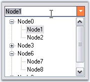
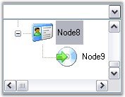

Events of ComboDropDown
ComboDropDown.DropDown: It occurs before the dropdown portion is shown. This event can be handled to select the item in the control based on the text of ComboDropDown before its dropdown position is shown. The event handler receives an argument of type EventArgs.
Refer DropDown Event.
ComboDropDown.PopupContainer.Popup: It occurs after the popup has been dropped down and made visible. It can be handled to get focus on the drop down portion of ComboDropDown. The event handler receives an argument of type EventArgs. Refer Make the DropDown Respond to Mouse Move.
Events of ComboDropDown
ComboDropDown.DropDown: It occurs before the dropdown portion is shown. This event can be handled to select the item in the control based on the text of ComboDropDown before its dropdown position is shown. The event handler receives an argument of type EventArgs.
Refer DropDown Event.
ComboDropDown.PopupContainer.Popup: It occurs after the popup has been dropped down and made visible. It can be handled to get focus on the drop down portion of ComboDropDown. The event handler receives an argument of type EventArgs. Refer Make the DropDown Respond to Mouse Move.
Setting Interaction between ComboDrop-Down and TreeView
1. Create a handler for the ComboDrop-Down's Drop-Down event and the TreeView's DoubleClick event. In the DoubleClick event, set the combo's text based on the selected node as follows.
|
[C#]
private void treeView1_DoubleClick(object sender, System.EventArgs e) { if(this.treeView1.SelectedNode != null)
// Set the combodropdown's text to be the TreeNode's text. this.comboDropDown1.Text = this.treeView1.SelectedNode.Text; else this.comboDropDown1.Text = String.Empty;
// Close the combodropdown. this.comboDropDown1.PopupContainer.HidePopup(PopupCloseType.Done); } |
|
[VB.NET]
Private Sub treeView1_DoubleClick(sender As Object, e As System.EventArgs) Handles treeView1.DoubleClick If Not (Me.treeView1.SelectedNode Is Nothing) Then
' Set the combodropdown's text to be the TreeNode's text. Me.comboDropDown1.Text = Me.treeView1.SelectedNode.Text Else Me.comboDropDown1.Text = String.Empty End If
' Close the combodropdown. Me.comboDropDown1.PopupContainer.HidePopup(PopupCloseType.Done) End Sub |
2. Simply traverses the tree structure recursively to find the matching node using the FindNode method discussed below.
|
[C#]
private TreeNode FindNode(TreeNodeCollection nodes, string text) { foreach(TreeNode child in nodes) if(child.Text == text) return child; foreach(TreeNode child in nodes) { TreeNode matched = this.FindNode(child.Nodes, text); if(matched != null) return matched; } return null; } |
|
[VB.NET]
Private Function FindNode(ByVal nodes As TreeNodeCollection, ByVal text As String) As TreeNode For Each child As TreeNode In nodes If child.Text = text Then Return child End If Next child For Each child As TreeNode In nodes Dim matched As TreeNode = Me.FindNode(child.Nodes, text) If Not matched Is Nothing Then Return matched End If Next child Return Nothing End Function |
3. In the drop-down event, find the node whose text matches the text in the combo and make that the selected node, using the following code.
|
[C#]
private void comboDropDown1_DropDown(object sender, System.EventArgs e) {
// Before the drop-down is shown, select a TreeNode based on the text in the combo. if(this.comboDropDown1.Text != String.Empty) { TreeNode matchedNode = this.FindNode(this.treeView1.Nodes, this.comboDropDown1.Text); this.treeView1.SelectedNode = matchedNode; } } |
|
[VB.NET]
Private Sub comboDropDown1_DropDown(ByVal sender As Object, ByVal e As System.EventArgs) Handles comboDropDown1.DropDown
' Before the drop-down is shown, select a TreeNode based on the text in the combo. If Me.comboDropDown1.Text <> String.Empty Then Dim matchedNode As TreeNode = Me.FindNode(Me.treeView1.Nodes, Me.comboDropDown1.Text) Me.treeView1.SelectedNode = matchedNode End If End Sub |
4. At run time, when the user double on a node, the node text will appears in the ComboDropDown.
5. Also when the user edits the text, the corresponding node will be selected in the tree in the drop down.

Figure 340: Selecting the Edited Node
 Note: We can also suppress the dropdown
event from firing by setting SuppressDropDownEvent property to true.
Note: We can also suppress the dropdown
event from firing by setting SuppressDropDownEvent property to true.
We can also associate a GridList control with the ComboDropDown and make it interactive. A sample which demonstrates this feature is available in the below sample installation location.
..\My Documents\Syncfusion\EssentialStudio\Version Number\Windows\Tools.Windows\Samples\2.0\Editors Package\ComboDropDown
Make the Drop-Down Respond to Mouse Move
By default, the drop-down control will not have the focus on drop-down, so the control will not respond to mouse move messages, if configured to do so. To work around this, you can force the control hosted in the drop-down to take focus on drop-down.
Drag the ComboDropDown and TreeView control onto the Form. Then add TreeView with nodes to the drop-down portion of ComboDropDown.
Listen to the ComboDrop-Down's PopupContainer's Popup event. This event will be fired after the drop-down is shown. In this event, call the drop-down control's Focus method.
|
[C#]
this.comboDropDown1.PopupContainer.Popup += new EventHandler(this.AfterDropDownPopup);
private void AfterDropDownPopup(object sender, EventArgs e) { // Tree takes focus on dropdown. this.treeView1.Focus(); } |
|
[VB.NET]
Private Me.comboDropDown1.PopupContainer.Popup += New EventHandler(Me.AfterDropDownPopup)
Private Sub AfterDropDownPopup(ByVal sender As Object, ByVal e As EventArgs) ' Tree takes focus on dropdown. Me.treeView1.Focus() End Sub |

Figure 341: AfterDropDownPopup Event Illustrated